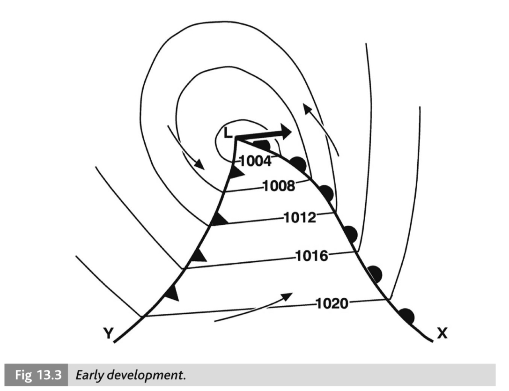

Meteorology 2
Precursor
Meteorology level 2 is the highest level of meteorology certification available, and as MET2 can be challenged
without MET1, it is often more worthwhile to just go for the higher level of certification as the content are very
similar. Meteorology 2 adds tropical storms, ice and a few other minor details onto the Met 1 syllabus.
Study Materials
Meterology 1 and 2 corrospond very closely to
Reed's Maritime Meteorology
and the definitions and diagrams from the book are helpful for the long answer portion of the exam.
Kemp and Young's Notes on Meteorology
was also really helpful to me, despite the book being rather old, because the simpler explainations and diagrams
were easier to parse as compared to Reed's. Bowditch has a couple
chapters on meterology, and one entirely dedicated to tropical revolving storms. I also found that just going outside to look at the actual weather in my area once in a while was a huge help towards devloping my understanding of what sort of weather clouds indicate. The last tool that was helpful towards my learning was windy.com, which shows global meterological and weather information and is a fantastic tool for understanding actual weather systems and global weather patterns/trends.
Composition of the Atmosphere
Composition: dry air is composed of a mixture of gases; within about 10 miles of earth's surface (the principal zone of interest). The main gases are 78% Nitrogen and 21% Oxygen; the rest of the gases are argon, carbon dioxide, helium and ozone. The area of chief meterological interest is not in these gases however; it is concerned with the presence of water vapour in the atmosphere. Unlike gases, water vapour in the air varies depending on changes in temperature, evaporation, precipitation and condensation.
distribution of the temperature in the atmosphere as height increases. fig 1.1 is from Reed's, and the second diagram is my own work
Solar Heating

inclination of the solar beam to the earth's surface
Heating and Air Movement:
- heating processes which impact the heating and cooling of the earths atmosphere
- Conduction: transmission or flow of heat by direct contact through an unequally heated body, or from places of high temperature to places of low temperature. This mechanism occurs on a clear night when the temperature of the groundd falls quickly; the heat in the air is tranferred to the cooler ground, resulting in air temperatures dropping. The temperature of the air close to the surface is principally affected by conduction by contact with the surface of the earth.
- Convection: transfer of heat within a gas by movement of the gas containing such heat. Broadly understood as the vertical movement of air within the environment, provides verrtical exchange of heat and water vapour. Occurs when a parcel of air in contact with a warm surface is heated above the temperature of its surroundings. The heated air expands, becomes less dense, and rises.
- Radiation: the transfer of heat from one body to another via electromagnetic energy waves. The sun emits short wave radiation which is recieved by the earth, and the earth emits long wave radiation back towards space. Sometimes the long wave radiation is insulated by cloud cover, creating a 'greenhouse' heating effect between the insulating cloud layer and the surface. By day the incoming solar radiation exceeds the outgoing radiation, and thus the earth is heated up. At night without the sun emitting constant heat, the radiative cooling of the earth causes temperature to drop.
- Turbulence: non-laminar (as in not flowing a smooth/straight path) flow of air over the surface of the earth. A layer of stratus cloud may form when warm air is flowing over a cooler surface. Turbulent air is cooled by conduction and if the wind is strong enough the cooled air will be carried to higher levels. Assisted by adiabatic cooling the air will reach its dew point and a layer of stratus clouds will form.
- Reflection: the reflection of electromagnetic waves within the atmosphere may impact both heating and cooling of the atmosphere and surface of the earth. Incoming solar radiation may be reflected back into space from the upper atmosphereic cloud cover. In polar regions ice and snow reflect incoming solar radiation, both result in a net loss of the heating effect of solar radiation. these 5 processes have come up on previous examinations and these answers are formatted to align with the examination long answers.
Precipitation
Rain and Drizzle: 'precipitation' is a generic word which refers to most forms of water deposit derived from the condensation of water vapour. Dew is a deposit of water formed by condensation on surfaces which have been cooled by radiation below the dew point. Drizzle is a condensed water droplet which is relatively very small (betweeen 0.2-0.5mm in diameter); if it is any larger than that, it is referred to as rain. The size of a cloud droplet is related to the size of trhe nucelei on which it forms; larger droplets have a greater speed of descent which may exceed the speed of the updrafts, allowing it to exit the cloud. Stratus clouds produce drizzle, but cumiliform clouds produce rain, because clouds of great vertical extent create the ideal 'cycling' conditions for rain to move through the cloud, growing in size.
Types of Rain: depending on the processes which form rain, it is classified into different types
- Convectional Rain: associated with an unstable atmosphere, high relative humidity and a large lapse rate in lower levels caused by strong solar heating, particularily during the hottest hours of the day. Sea surface temperatures have little change in temperature over the course of the day, but moisture-laden air moving over a relatively warm sea surface will often produce convectional rain.
- Orographic Rain: this type of rain occurs when moisture-laden air encounters a range of hills or mountains, which force it to rise to heights well above the condensation level. It is usually the heaviest on the 'weather' slope and may be light or even negligable on the leeward side. This type of rain can be exceptionally heavy.
- Frontal Rain: occurs when two distinct air masses meet one another during a 'front'. The passage of fronts is always associated with rainfall. More about frontal passage.
Frost, Snow and Hail: when water vapour condenses at temperatures well below the freezing point it forms tiny ice crystals, which during their descent build up into snowflakes. Hail falls from cumulonimbus clouds in hard ice pellets. Water droplets can exist in a cloud in a supercooled state, where they are liquified but suspended below the temperature where water would freeze; when they make contact with a suitible nuclei they freeze instantly, creating an ice crystal. If supercooled water droplets are carried up to a height where ice crystals already exist, the crystals may act as suitable nuclei, forming white pellets of ice. In all cases; when its size increases its speed of descent may exceed the speed of updraft, at which point the droplet will exit the cloud. Hailstones falling can also freeze water droplets close to the freezing point, which coats the droplet in hard ice.ea
Humidity and Condensation
Water Vapour, Saturation, and the Dew Point: water vapour is water in its invisible gaseous state, and forms the basis for virtually all weather occurances. Clouds are formed from visible water droplets suspended in the liquid state. The maximum quantity of water vapour which can be contained within a given volume of air is limited by temperature; and when the maximum possible amount of water vapour is present in the air (when the point of relative humidity is 100%) it is said to be saturated. Air containing less than the maximum possible quantity is said to be unsaturated; but this volume of air also has the potential to become saturated air if it cools to the dew point. The dew point of saturated air is considered to be its temperature. As unsaturated air loses heat and becomes saturated, any further cooling beyond this results in excess water vapour condensing into the liquid or solid state (visible water droplets or ice crystals).
Humidity: humidity is measured absolutely (the actual amount of water vapour in the air at any time, expressed as grammes per cubic metre) and relatively (the ratio of water vapour present in the air to the maximum amount possible at the same temperature, expressed as a percentage). Relative humidity is calculated by (absolute humidity x100 / saturation value at the same temperature) and expressed as a percentage. The higher the dew point, the greater the amount of water vapour that is condensed.
Hydroscropic Nuclei: within the troposphere there is always present a varying quantity of very minute solid particles, such as dust (not generally considered a hydroscopic nuclei), salt from sea sprau, soot and smoke from fires, and other sources of pollution. Most of these particles are hydroscopic and attract and absorb moisture. They are the foundation onto which water vapour condenses, becoming visible water droplets (cloud or fog). Without hydroscopic nucelei in the air condensation would be improbable. These particles are most abundant near the surface of the earth and are carried into the upper levels by convection. Over industrial areas where there is a high degree of pollution, fog can form before the dew point is reached.
Thunderstorms
Formation: in order for a thunderstorm to form, it must have the necessary conditions to facilitate development. Thunderstorms develop in cumulonimbus clouds with enough vertical lift and updraft to facilitate the cycling of rain throughout the cloud (as in, the speed of updrafts must always exceed the downward force of droplets). This process is very much the same for the development of hail in clouds, though slightly different (as hail requires freezing temperatures). The electrical charges inside a cloud, which produce lightning, build up from the intense activity within the cloud; it is found that the tops/upper parts of thunder cloudshave a positive electrical charge, whereas the lower regions are negatively charged, save for one localized region of positivity. The electrical charges come from the splitting of raindrops as coalescence makes them larger than 5.5mm, causing the droplets to break in half- with the splitting producing negative energy and the drops themselves retaining a positive charge. This is why the charges are localized within the cloud as they are.
Cloud Development
Cloud Types and Classification: low level clouds are stratiform (stratus and nimbostratus), mid level tend to be altiform (altostratus or altocumulus), high level are cirriform (cirrus, cirrostratus, cirrocumulus), and lastly clouds which form in lower levels but which span great vertically are cumuliform (cumulus and cumulonimbus).
Adiabatic Processes: an adiabatic process is a process which occurs without gain or loss of heat- it is thermally insulated. When a body of air is subjected to increased pressure it undergoes compressional heating; similarily, if the same body of air is subjected to a decrease in pressure it undergoes expansional cooling. In both these cases, no interchange of heat takes place between the body of the air and the surrounding air; and the temperature changes thus brought about are said to be adiabatic changes. If a parcel of air rises through its environment it undergoes a reduction in pressure and is cooled adiabatically. Conversely if it sinks, it undergoes an increase in pressure and is warmed adiabatically.
Adiabatic Processes in the Atmosphere: atmospheric pressure decreases with height; thus, if a body of air rises through the surrounding air it undergoes a reduction in pressure and is cooled adiabatically. Conversely if it sinks it is subjected to an increase in pressure and is warmed adiabatically. In both cases no interchange of heat takes place between the body of air and its environment.
Cloud Formation
- when unsaturated air is forced to rise it will expand and cool adiabatically
- if the ascent continues long enough it will reach its dew point and become saturated
- further upward motion will result in the condensation of excess water vapour in the form of cloud (visible water droplets, or if the temperature is low enough- ice crystals) NOTE: moist air gives a relatively low cloud base, and dry air a relatively high cloud base

Various lapse rates. The latter 4 images (a,b,c,d) are variations of the environmental lapse rate in various atmospheric conditions.

Diagrams of air stability. 5.3a is stable air; b is unstable air; and c is conditionally unstable. Note the position of the ELR (the line marked 'E') relative to the SALR (marked 'S') and DALR (marked 'D'). In 5.3c if the air is saturated at line WX it will be unstable, and if it is unsaturated it will be stable (note the position of the ELR in these cases!)
Mechanisms Creating Cloud:
- Convective: local surface heating creates convective currents. These currents may displace an air parcel vertically, cooling adiabatically as it moves up- first at the DALR and then at the SALR after reaching the condensation level. Clouds formed this way may simply be cumuliform, fair weather cumulus (Cu) or cumulonimbus (Cb).
- Orographic: forms when an airstream, on meeting an area of high ground, is deflected upwards and the consequent adiabatic cooling brings the temperature below the dew point of the rising air. Cloud may be status (St) or nimbostratus (Ns) with a base at the condensation level and height dependant on the height of the barrier. Downward at the barrier, lenticular clouds may form.
- Frontal: the warm air fo the warm front moves more quickly than the cold air mass, which causes it to be undercut by the cold, dense wedge of cold air, causing the warm air to lift up over it. Ahead of the warm front (~1000km ahead) high clouds form as the warm air is forced upo vertically, cooling adiabatically and reaching saturation to form clouds; cirrus (Ci) and cirrostatus (Cs). Within 500km of the front, and mid-level altostratus (As) cloud form, and near approach to the front low nimbostratus (Ns) form.
Restricted Visibility
Fog: there is no difference between 'fog' and a 'cloud'; they are formed by the same processes, but when a cloud begins to form close to the surface it is called fog. The terminology changes depending on the range of visibility; fog refers to a condition where visibility is limited to less than 1,000 meters horizontally; when visibility is more than 1,000 meters and less than 2,000 it is called either mist (if it is formed by water vapour) or haze (if solid particles like soot or ash are in the air limiting visibility).
Types of Fog: fog is classified into types, depending on the circumstances in which it forms.
- Advection Fog: this is the most commonly encountered type of fog to be encountered at sea. It is caused by relatively warm air flowing over a cooler sea surface. The sea surface, being below the dew point of the warm air mass, will begin cooling the warmer air through convection and conduction until the dew point is reached and the air becomes saturated. This process requires a wind speed ranging between 4 and 16 kts (2-4 on the beaufort scale) to facilitate mixing. The strength of the wind also determines the vertical thickness of the fog and its zone of dispersal. This type of fog is very common off the Grand Banks of Newfoundland in the summer.
- Radiation Fog: Occurs over land in high moisture conditions with clear skies, usually at night when the diurnal variation in the temperature is at its lowest and the land is radiating heat (especially when there are no clouds to insulate). The moist air over the land begins to cool by proximity to the surface; and if the air cools enough it will fall below the dew point and fog will develop. A gentle breeze (5kts) is ideal to mix the air without disturbing it too much- leading to greater vertical thickness. Since cold air is heavier than warm air radiation fog tends to sink into valleys and move down hills. It is most commonly seen in autumn and winter over low-lying lands and especially in valleys.
- Frontal Fog: caused by warm rain or drizzle from a warm front passing through a cold air mass or warm occulsion. The rain evaporates into the cold air, causing relative humidity to increase until reaching the dew point, where fog occurs. Occurs often at temperate or high latitudes with the movement of fronts.
- Sea Smoke/Arctic Sea Smoke: occurs close to the sea surface when the air is dry and cold, at least 9 degrees Celcius colder than the sea surface temperature. Rapid evaporation occurs as a relatively warm sea surface makes contact with the cold air, and the cold air becomes saturated to its dew point, where fog occurs. Has the distinct appearance of a 'steaming' sea. This is the only type of fog which can be associated with strong winds, as a continuous supply of cold air is needed. This type of fog is commonly seen in the Arctic and Antarctic, and sometimes off the northeastern coast of Newfoundland in winter.
Waves
Characteristics of Waves: when the wind blows over the surface of the water, the friction of the wind creates waves in the water; up to a limit, the stronger the wind is, the greater the wave height will be. The distance in which wind has travelled over water in one direction is called the 'fetch', and this is another factor in wave growth in the open ocean. Waves which are caused directly by wind blowing at the time of observation are called 'sea waves', but waves which have been created sometime beforehand by winds blowing in an area a distance away are called 'swell waves'. Swell waves may have a long wave length proportionate to their height. Waves are described with length (horizontal distance between successive crests), period (time between crests), speed (knots at which crests advance) and height (vertical distance from crest to trough). The length is found through the formula 1.56 x period squared, and the speed is found by multiplying the period x 3.1. The steepness of a wave is described by the ratio of height to length (H/L); the height is not specifically related to other factors because when the steepness exceeds 1/13 the wave will break (expressed as H/L > 1/13).

The Beaufort Scale: waves and wind force are estimated through use of the beaufort scale.
| force | wind(kts) | description | appearance of wind effects |
| 0 | less than 1 | calm | sea is like a mirror |
| 1 | 1-3 | light air | ripples with the appearance of scales are formed, but without foam crests. |
| 2 | 4-6 | light breeze | small wavelets, still short but more pronounced. Crests do not break. When visibility good, horizon line always very clear. |
| 3 | 7-10 | gentle breeze | large wavelets. Crests begin to break. Foam of glassy appearance. Perhaps scattered whitecaps. |
| 4 | 11-16 | moderate breeze | small waves, becoming longer. Fairly frequent whitecaps/white horses |
| 5 | 17-21 | fresh breeze | moderate waves, taking a more pronounced long form. Many whitecaps are formed. Chance of some spray. |
| 6 | 22-27 | strong breeze | large waves begin to form. The white foam crests are more extensive everywhere. Probably some spray. |
| 7 | 28-33 | near gale | sea heaps up and white foam from breaking waves begins to be blown in streaks along the direction of the wind. |
| 8 | 34-40 | gale | moderately high waves of greater length. Edges of crests begin to break into the spindrift. The foam is blown in well-marked streaks along the direction of the wind. |
| 9 | 41-47 | strong gale | high waves. Dense streaks of foam along the direction of the wind. Crests of waves begin to topple, tumble and roll over. Spray may affect visibility. |
| 10 | 48-55 | storm | very high waves with long overhanging crests. Dense white streaks of foam. Surface of the sea takes a white appearance. The tumbling of the sea becomes heavy and shock-like. Visibility affected. |
| 11 | 56-63 | violent storm | exceptionally high waves. Sea completely covered with long white patches of foam. Visibility affected. |
| 12 | 64+ | hurricane | air filled with foam and spray. Sea entirely white with foam. Visibility seriously impaired. |
Wind and Atmospheric Pressure
Cause of Wind: wind is caused by atmospheric pressure; the weight of all the air in the atmosphere pressing down on the earth and the troposphere. Pressure decreases as height increases and surface pressure can vary continually. Barometric pressure is typically expressed in hPa or millibars and is expressed on a chart through isobars, which connect and encircle areas of equal barometric pressure. Atmospheric pressure is exerted equally in all directions; horizontal movement of air is caused by the differences in pressure between one point in that level and another. This difference in pressure produces a pressure gradient force, which acts to move air from high pressure to low pressure. Horizontal pressure gradient force acts at right angles to the isobars, but is not the only force which acts upon the air; the rotation of the earth also produces a force upon the wind called the coriolis force that appears to deflect air to the right in the northern hemisphere, and to the left in the southern hemisphere. At heights of 600 meters or more the effects of surface friction can be ignored and the geostrophic wind blows parallel to the isobars.

Demonstration of surface wind forces. The angle of indraught is the angle at which the wind enters into the isobars, which is demonstrated in the lower diagrams demonstrating why wind in the northern hemisphere circulates counterclockwise in a depression, and clockwise in an anticyclone.
Buy's Ballots Law: if in the northern hemisphere, an observer stands facing into the wind and holds both hands up, then the area of low pressure is on their right hand side. The converse of this is true in the southern hemisphere. Within 5 degrees of the equator this law does not apply because the wind flows straight across the isobars.


Lift of airmasses and global distributions of pressure and wind
Prevailing Winds of the Ocean
- Trade Winds: the trade winds blow almost constantly (except in prevailing monsoons) throughout all seasons at a mean speed of 14 kts, strongest in the winter. The trade winds occur from 30 degrees latitude towards the equator. The area where the trade winds occur is an area of divergence and high pressure.
- Temperate Winds/Westerlies: westerly winds predominate the poleward side of the oceanic highs at latitudes greater than 35 degrees but less than 60 degrees. This area between 35 and 60 degrees is an area of convergence and low pressure, similarily to the ICTZ. Winds in the temperate zones are subject to considerable variation in direction and force because they lie in a very disturbed region of travelling anticyclones and depressions.
- Intertropical Convergence Zone (ICTZ)/Doldrums: the ICTZ, which were formerly known as the 'doldrums' or 'calms' and is a band of convergence where air from the North and South hemispheres meets. The ICTZ varies seasonally and moves seasonally because of unequal heating of the earth. This region is known for having light and variable winds, and are further characterized by heavy convectional rain and thunderstorms. This is because little wind and high heating, especially of moist ocean air, creates ideal conditions for these type of storms to develop.
- Monsoons: in the summer, large land masses are heated and pressure becomes low over the land and high over the sea. In the winter, the reverse of this happens. The resulting wind circulations tend to persist through their respective seasons and are called moinsoons. Most developed monsoons occur over southern and eastern Asia, especially in the China Sea and Indian Ocean. Monsoons in this area produce local condition called 'crachin', which is touched upon in the glossary of Reed's Meterology.
Mechanisms Resulting in Wind:
- Land and Sea Breezes: the temperature of the land falls quickly due to radiation cooling at night; comparatively the sea temperature does not vary much diurnally. The denser air moves downslope over the sea and the relatively warmer air over the sea is disturbed to rise and is replaced at the surface level by the air from over the land. There is a counterflow from the sea to the land. Land breezes are most often present by midnight but may develop into the early morning. Sea breezes are caused by the rapid rise in land temperature over the day, which causes convection currents and a drop in pressure as the air is warmed and expands and rises. Air from over the sea moves in to replace the rising air. There is a counterflow from the land to the sea, and winds reach their maximum at mid-afternoon. In summary; air moves from the warm land towards the colder sea during the daytime, and then during night the relatively warmer sea air moves over the cooler land.
- Katabatic Winds: develop at night on a steep hill or mountainside when there is a slack pressure gradient and rapid radiative cooling of the land. The air in contact with the surface cools and grows denser- this denser air flows downslope and moves over the sea. Adiabatic cooling is counteracted by continuous contact with cool land. When the slope is covered with snow or ice the air becomes very cold and dense, and gale force winds may result.
- Anabatic Winds: very similar to katabatic winds, but in the opposite direction- uphill. Land heats during the day, resulting in upsloping winds as air moves towards a less-dense area. Because air directly above the warmed parcel is not as warm as the land is, the air takes an uphill path close to the surface and moves horizontally uphill as opposed to vertically.
- Chinook Winds: a warm and dry local wind which is associated with the Rocky mountains in Canada and the United States. Blows generally in a west or southwest direction. Produces a very strong Fohn effect, which warms adiabatically on descent and warms the leeward side of a mountain, capable of causing rapid melting of snow. On the weather side of the Rocky Mountains, the air is force to rise and cool and diabatically. If cooled below the dew point, condensation will occur and the air will continue to cool at its SALR, and may even form clouds at the top of the mountain (orographic), which consume much of the existing moisture in the air. The then dry air on the warmer leeward side begins its descent and warms at the DALR, gaining the potential to melt mountainous snow deposits on descent. The air on the lee side is warmer than it would be at the same height on the weather slope; therefore chinook winds are seen as warm winds. These particular wind mechanisms are touched on because they have appeared in previous examination material. A list of local winds is on page 55 of Reed's Meterology, and all breezes are touched upon in the Glossary
Air Masses

Classification of Air Masses: the characteristics of an air mass are governed by three factors; the origin (determines temperature/humidity), the path (determines modifications at the surface level. as an air mass moves away from the origin it slowly picks up characteristics from areas it passes over) and the age (determines height to which surface characteristics penetrate). The table below shows the classifications of air masses, through anywhere in the world can occasionally act as a source region.
| TYPE | ABBREVIATION | ORIGIN | DETAILS |
| Arctic Maritime Air | Am or mA | Over seas in arctic or antarctic regions | low temperature means low moisture content, but picks up moisture when passing over sea surfaces and warming takes place from below |
| Arctic Continental Air | Ac or cA | Over land in arctic or antarctic regions | very cold stable airstream with low moisture content |
| Polar Maritime Air | Pm or mP | Over seas in sub-polar regions | cold air from high latitudes moving over relatively warm surface. usually associated with instability. |
| Polar Continental Air | Pc or cP | Over land in sub-polar regions | very cold stable airstream with low moisture content. clear skies over land but over the sea warming and evaporation may take place, creating cumuliform cloud. in the summer can convert into a warm air mass. |
| Tropical Maritime Air | Tm or mT | Over seas in subtropical regions | warm and very moist air moves over a sea surface and becomes progressively cooler. a stable air mass which very wide advection fog or low stratiform cloud may form. |
| Tropical Continental Air | Tc or cT | Over land in subtropical regions | very warm and dry at the source. remains dry when passing over land and picks up little moisture when passing over sea surfaces. little cloud and precipitation, and associated with stability |
| Equatoral Air | E | Very low latitudes between the trade wind belts | warm, moist and often very unstrable, especially after being subjected to surface heating over land when convection currents carry large quantities of moisture into the high levels, forming cumulus and cumulonimbus cloud, and producing copius rainfall |


air masses as they move over a sea surface
- COLD moist air flows over a WARM sea surface
- becomes heated at the surface by contact (conduction)
- warmed air rises in vertical columns called convection currents
- the greater the temperature difference between the air mass and the surface the greater the convection currents
- rising air will cool adiabatically, first at the DALR until it reaches the dew point and condenses, forming a cumuliform cloud (Cu, associated with instability). Further cooling will be at the SALR, and any further vertical movement increases the change of precipitation, characteristically in the form of isolated showers.
- this air is unstable because vertical movement is stimulated, especially in humid air
- an unstable air mass is favorable for good visibility except in showers
- WARM and moist air flows over a COLD sea surface
- becomes cooled at the surface by contact (conduction)
- surface friction causes turbulenbt mixing of the air at and near the surface. This diffuses the cooling upwards from a few feet to a height of 500 meters or more depending the speed of the wind and roughness of the surface.
- this colder, denser, heavier air forms a shallow layer on the surface and is stable because it offers desistence to any vertical displacement
- if the air contains enough moisture, a layer of cloud (St, associated with stability) will form below the top of the turbulence layer. If the air is dry or faily dry skies will likely be clearer. Possibility of drizzle and rain from low stratus clouds.
- fog can form in light winds if the temperature at the surface is below the dew point temperature (think advection fog)
- poor visibility is favored by a stable air mass
- this sort of air mass movement is typical to the west coast of Vancouver Island when under the influence of the warm sector of a mid-latitude depression
Isobaric Patterns


the two most prominent isobaric patterns, the depression and anticylone, as they appear on windy. In these examples, you can see the clear curve of the isobars and the rotation and severity of the wind (blue/green being light winds and red/purple indicating severe wind), as well as the clear trough and ridge in each example, respectively. The last diagrams are my own drawings of the isobaric patterns (mid-latitude frontal depression, high pressure system, trough of low pressure, ridge of high pressure, and lastly the col)
Isobars are capable of forming 7 distinct forms; though of these 7, only 2 types of weather systems are fundamental; the depression (involving low pressure) and the anticyclone (involving high pressure). The other five isobaric patterns are the secondary depression, trough (related to depressions), ridge (relating to anticyclones), col, and straight isobars.
All About Depressions: a depression is an area of low barometric pressure surrounded by an area where the pressure is relatively high. The isobars of a depression are roughly circular/curved and in accordance with Buys Ballot's Law the wind flows in an anticlockwise direction around the area of low pressure when in the northern hemisphere. In the southern hemisphere the opposite is true and depressions circulate in a clockwise pattern. Depressions greatly vary in intensity and are usually associated with poor weather (much cloud/precipitation and strong or gale-force winds, especially near the center). The severity of the weather is governmed chiefly by the steepness of the pressure gradient and moisture content of surface air. The term depression is commonly applied to cyclones in latitudes lying outside of the tropics but may be used to describe a weak tropical cyclone. Depressions tend to move towards areas of low or falling pressure and avoid high pressure regions. The trough is an area in a depression where the the isobars are curved inwards (either deeply, as in sharply curved, or shallow and having a slight curve). Fronts are all troughs, but not every trough is a front. Sometimes another depression can form within the isobars of a 'primary' depression, creating a secondary depression, which may deepend and absorb the primary (older) depression. Secondary depressions often develop into much more vigorous systems than primaries.
Anticyclones and Ridges: a region of high pressure surrounded by an area of relatively low pressure is called an anticyclone. The isobars, like the depression, are roughly curved/circular in shape. In the northern hemisphere, the wind circulates clockwise (opposite to depressions), and anticlockwise in the southern hemisphere. Generally, the pressure gradient is slight and winds are light near the center. Weather is dry, quiet and settled- but land and sea breezes are marked especially during the hottest months of the year. A ridge is an area where the pressure gradient expands and the isobars curve greatly at the edges.
Cols and Straight Isobars: the col is an area of indeterminate pressure located between two highs and two lows, which are arranged alternately. It is associated with light variable winds, but is often thundery in summer and dull/foggy/misty in winter. Straight isobars is a straightforward condition where the pressure distribution over a large area results in mostly straight isobars which run parallel to one another. This is usually assocaited with the outlying portion of a large depression or anticylone.
Fronts
Fronts and Frontal Systems: when two air masses of different characteristics meet they do not mix freely but instead remain seperated by a boundary called the frontal surface. Such a boundary is represented on a weather chart as a front. The positions of frontal zones marking the boundaries between the principal air masses fluctuate constantly while their mean positions move north and south with the seasons.
- the main frontal zones are as follows:
- The Arctic Front: the arctic front marks the transition between arctic air and polar maritime air. There is a similar front in the north Pacific.
- The Polar Front: marks the boundary between polar and tropical air masses in the atlantic and pacific oceans. In the north atlantic its mean position in summer is from Newfoundland to Scotland. In winter it moves southwards and extends from Florida to south-west England.
- The Mediterranean Front: the mediterranean front exists only in winter and extends from west to east across the Mediterranean, seperating polar continental air originating from Europe and tropical continental air from North Africa
- The Intertropical Convergence Zone (ICTZ): the ICTZ lies in the tropics and is a broad zone of seperation between the NE and SE trades which flow equatorwards from opposite hemispheres. It was formerly known as the intertropical front but this term is depreceated because the bodies do not differ greatly in characteristic. The ICTZ crosses and recrosses the equator at several points and moves well north in the summer. Due to very large land masses in the northern hemisphere the greater part of its length lies northh of the equator. Its range of movement is small over the oceans but may be very large over the continents. Areas of horizontal convergencealong this belt vary from day to day in both position and activity and are generally associated with cloudy, showery weather.

Frontal Theory of Depressions: within the temperate zones cold air flowing from high latitudes encounters warm air moving from sub-tropical regions. The two surfaces are seperated by a frontal surface which slopes upwards over the colder denser air at a gradient (vertical steepness) which varies from 1 in 40 to 1 in 200. The polar front tends to remain inactive so long as the warm and cold air masses flow parallel to one another, but when they converge warm and moist air is forced upwards over the cold frontal surface- which often results in the formation of much cloud and precipitation, and often starts the mechanism which leads to the development of a frontal depression.
Diagram 13.3 shows the early development of a frontal depression. The rightmost line (LX) with 'D' shaped bulges on the line represents the warm front and on weather charts is typically colored in red. The leftmost line (LY) with triangular protrusions represents the cold front and is typically colored in blue. The area which is between these two fronts is called the warm sector (because the air is warmed by the earlier passage of the warm front) and may be subject to slight rain, drizzle or fog (most typically advection fog). The center of the frontal depression will tend to move along the polar front in a direction roughly parallel to the isobars formed in the warm sector and at a speed approximate to that of the air in the warm sector.
- Sequence of frontal depression development....
- Under suitable conditions a small wave forms on the polar front, so at this point there is a 'bulge' of warm air which protrudes up into the cold air. The two air masses flow mostly parallel to one another along the polar front, except at the bulge where the winds are convergent (the horizontal inflow of air exceeds the horizontal outflow of air, and excess air excapes vertically)
- The wave continues to grow in size. Development (of the depression) usually follows and pressure falls at the crest of the wave.
- Enlargement of the bulge continues and this is accompanied by a further fall in pressure. The isobars then assume the closed form of a depression and wind circulates around the tip of the bulge. As pressure continues to fall the gradient becomes steeper and the winds stronger.

frontal depression development. the second example shows the 'bulge' protruding into the polar air which eventually develops the entire front

vertical sections of warm and cold fronts. from page 89-92 of Reed's
| warm front | warm sector | cold front | |||
| approaching | passing | warm sector | passing | at the rear | |
| PRESSURE | steady fall | stops falling | little change | sudden rise | rising steadily |
| WIND | veers from S to SW and increases | veers with possible increase in velocity | steady, possibly backing as cold front approaches | sudden veer from S to SW or NW with squalls | velocity tends to decrease, steady in direction |
| TEMPERATURE | rising slowly | slight rise | little change with relatively high temperatures | sudden drop | little change but tendency to fall |
| SKY | becoming overcast Ci, Cs, As, Ns | Ns and Fs | Overcast with St turning to Sc | Cb | Cb, Ac and Cu with blue sky |
| PRECIPITATION | continuous from drizzle to heavy rain or snow | rain stops but may be slight drizzle | intermittent slight rain or drizzle, possibly fog | heavy rain, thunder, and possible hail | there may be a narrow belt of continuous heavy rain, turning to heavy showers later |
| VISIBILITY | deteriorating | poor | poor | great improvement | excellent except in showers |
| HUMIDITY | increasing | rapid rise | very high | rapid fall | fairly low but variable in rain |
| UPPER AIR | stable | very stable | stable | very unstable | unstable |
The Occluding of a Depression: the cold front advances faster than the warm front and gradually overtakes it commencing at the tip of the warm sector and working down the length of the front until the occluding process has been completed and all the tropical air has been lifted off the ground. The chart symbol for occlusion is a combination of the warm and cold front symbols, and is usually colored in purple. An occulsion is classified as warm or cold according to whether the overtaking polar air (the air at the cold front) is warmer or colder than the retreating polar air (the cold air acting as a 'ramp' for the warm air at the warm front)- if air at the rear is warmer (a warm occulsion) then it will also slope up the 'wedge' of cold air at the front; and if air at the rear is cooler (a cold occulsion) it will 'roll' over the rest of the air much like how it appears in the vertical section of a cold front (figure 13.5). In both these cases the warm air is lifted up off the ground completely. Since the energy needed to maintain the frontal depression is largely derived from the supply of air in the warm sector, it follows that the larger the warm sector is, the more the frontal depression is able to develop even during the process of occlusion. Later this development ceases and movement of the depression may slow to a crawl while it becomes dependant on the upper movement of air and gradually 'fills in' as it weakens and later disappears. The arrival of a new and more vigorous front can destroy the old circulation and cause it to fill up very quickly.
Non-Frontal Depressions
Convergence and Divergence: the term convergence describes an area in which the horizontal inflow of air exceeds the horizontal outflow of air at the same level; excess air escapes vertically. Except in arid regions convergence is usually associated with much cloud and precipitation- such as in fronts and centres of depressions. Divergence describes the opposite of convergence- an area where the horizontal outflow of air exceeds the horizontal inflow at the same level; and the deficiency of air is restored by vertical movement (when divergence occurs at the surface level rather than in the upper air, this vertical deficiency is filled by subsidence). Subsidence is the slow downward motion of air which is warmed adiabatically on descent, and when divergence is filled by subsidence it is associated with great stability.
- Formation of non-frontal depressions (Fig 14.1, specifically the leftmost column)
- divergence at the upper level reduces total weight of air within a limited area and barometric pressure falls at the surface
- surface air flows in towards the area of low pressure with cyclonic circulation
- convergence at surface level causes ascent of moist air with consequent increase in cloud and precipitation
- for this system to remain active the outflow of air at the upper level must exceed the inflow at the surface
- when the inflow of air at the surface exceeds the outflow at height the depression will fill up
Anticyclones
Formation: figure 14.1 showing the systems of convergence, divergence and subsidence also shows the formation of an anticyclonic system (on the right side). Convergence at the upper level increases the quantity of aand total weight of air within a limited area, causing barometric pressure to rise at the surface. In the northern hemisphere the flow of wind is clockwise and the wind blows outwards crossing the isobars, moving from high pressure to areas of lower pressure. The outflowing of surface air is replaced only by dry air descending vertically from above (subsidence of air). Like with non-frontal depressions, the system is dependant on the flow of upper air to maintain it- if the convergence at the upper level exceeds the surface divergence the system is maintained. When the convergent flow of air at the upper level ceases to feed the subsidence the system will decline. The air at the upper levels is dry and warmed by compressional heating as it subsides into regions of higher pressure; thus in the central area of a well developed anticyclone the air 500 meters above ground is generally warmer than the air below. This increase of temperature with heigt is called an inversion (think back to the environmental lapse rate and both the 'isothermal inversion' and 'inversion at height', which are both inversions caused by subsidence). Since ascending air is core to the development of cloud and rain, the center of an anticyclone is generally associated with fine and dry weather.
Types of Anticyclone:
- Cold Anticyclones: a anticyclone where the air is colder than in the surrounding area. Build up over large land masses in winter, notably Siberia where the pressure can become very high. The formation of a cold anticyclone is reverse to that of a thermal low.
- Transitory Cold Anticyclones: typically form within a polar air mass in the temperate latitudes and in the rear of a family of depressions. In winter, near coasts where the air is moist, layer type cloud spreads below the subsidence inversion and accumulates smoke pollution and dust- producing an anticyclonic gloom.
- Warm Anticyclones: anticyclones in which the surface is warmer than the surrounding air, but in the upper levels air is colder than the surrounding environment.
- Permanant Warm Anticyclones: these are the oceanic highs in the sub-tropical belts (think back to global pressure distribution). These systems are very stable and weather is generally fine with little cloud and good visibility. They have an average seasonal movement between 30 degrees and 40 degrees in both hemispheres but the mean movement can vary greatly year-to-year. The subtropical highs are the source regions of the tropical maritime air flowing from higher latitudes to meet the polar front.
- Temporary Anticyclones: may develop as a result of continued subsidence within a temporary cold high which remains stationary for a long period.
Tropical Revolving Storms
All About TRS: a tropical revolving storm, also known as a 'cyclone', 'hurricane' or 'tropical storm' (among other regional names) is a rapidly rotating storm systems within a depression. The isobars of a TRS form close to true circles and have a very steep pressure gradient; hence the very intense winds within the system. Tropical storms are associated with winds greater than Beaufort force 7 or greater (up to force 12 in the case of hurricanes). Most often, tropical revolving storms will form on the western side of oceans- but they do not form within 5 degrees of the equator because the coriolis force is too weak at these latitudes to create circulation. TRS develop from pre-existing 'seeds' of disturbance such as easterly waves and clusters of clouds associated with the Intertropical Convergence Zone. After forming, tropical cyclones generally travel northwesterly (in the northern hemisphere) or southwesterly (in the southern hemisphere), recurving at about 20 degrees or more of latitude and then moving either northeast or southeast (depending on hemisphere). The point of recurvature on the track is called the vertex (do not confuse this with 'vortex', which is the eye of the storm). The tracks can vary considerably and depend on general pressure distribution existing at the time. When a storm crosses onto dry land it tends to die out rapidly from lack of moisture- but this is not always the case (a good example of this is in the Bay of Bengal nearby India). Some storms reach into temperate latitudes, but by this time they will have increased in size and lost much of the original intensity; leading them to assume the general characteristics of a temperate latitude depression complete with fronts, or to become absorbed in the circulation of a frontal depression. The speed at which a TRS moves varies, falling considerably or even remaining stationary at the vertex but increasing rapidly (~20kts) after recurvature.

diagram illustrating a tropical revolving storm in the northern hemisphere
- Pressure: at the eye of the storm is the area of the lowest pressure. TRS are associated with low pressure, something around 960hpa could be observed at the center of a violent storm, but it varies case-to-case. Barometric readings should be taken and recorded every hour regardless of where a vessel is in the world, because a sustained drop ion barometric pressure (5hpa below the mean) or other marked departure from the diurnal pressure variation can be a sure indicator of a developing TRS
- Appearance of the Sky: vivid coloring at sunrise and sunset are often a warning feature, accompanied or followed by cirrus cloud not infrequently forming into a 'V' shape with the formation pointing towards the center of a TRS. Cirrus may first appear when within 300 to 600 miles away and is often the first warning sign of a cyclone, even during early developmental stages.
- Swell: there will be a long swell coming from the direction of the storm centre provided that there is no land intervening between the storm and the ship. The swell travels fater than the storm and usually extends more than 400 miles and sometimes even 1000 miles away from the centre. The swell may well be one of the first warning signs of a TRS because this wave moves much faster than the storm itself. This swell can create a 'storm tide' which creates flooding on the coast. Water begins to rise one or two days before the storm and continues to rise until the storm passes or curves away.
- Visibility: exceptionally good visibility frequently precedes a tropical revolving storm
- Wind: during the storm season appreciable increase in wind force and/or wind direction should be regarded as a possible indication of a TRS approaching. The wind force and waves associated with a tropical revolving storm are what are most concerning to the mariner. Wind force can vary considerably between storms but the winds oare the strongest on the side of the storm nearest to the adjacent subtropical high, because the cyclonic circulation (anticlockwise in the northern hemisphere and clockwise in the southern hemisphere) is reinforced by the general airstream in which the storm is moving. The strongest winds occur in the right hand semicircle in the northern hemisphere, and the left hand semicircle in the southern hemisphere.
- Weather Within: very heavy rain is a feature of all tropical revolving storms. Moving towards the center, typically light rain is seen at about 100-150 miles from the center, worsening into violent squalls with torrential rain and exceptional wave height. Extreme wind throws sea spray through the air and thus visibility is very poor. The roar of the wind is deafening near the center and drowns out any thunder. As the edge of the eye passes the wind would become light, the rain would case and the seas mountainous and appearing as they approach from all directions; blue sky might even be visible through patches of cloud.
Avoidance of TRS

- the diagram accompanying is from Reed's Marine Meterology page 126 and illustrates the steps that can be taken by vessels caught within a TRS to avoid the worst effects.
- Right-hand 'Dangerous' Semicircle (vessel A): a ship under power should proceed with maximum practical speed with the wind ahead or on starboard bow, hauling round to starboard as the wind veers. If sea room is inadequate to make headway, then heave to starboard.
- Left-hand 'Navigable' Semicircle (vessel B): run with the wind well on the starboard quarter making all possible speed and haul round to port as the wind backs.
- Direct Path and Ahead of Storm (vessel C): with the wind on the starboard quarter make all possible speed into the navigable semicircle.
- Vessel Overtaking Storm (vessel D): this is an unsual circumstance, but ships today can make great speeds and mayu overtake a storm. Heave-to; the wind will shift to the right and the barometer will rise to show the ship is in the rear quadrant of the dangerous semicircle ahead of the trough; she should then get the wind onto her starboard bow (as vessel E demonstrates). If ship D does not heave-to when the storm is first suspected and continues her course, the barometer will fall and the wind will veer to the left. This could lead to an incorrect assumption that the ship is in the safe side of the semicircle ahead of the trough, and she may run into the dangerous quadrant without realizing.
Ocean Surface Currents
Causes of Surface Currents: surface currents can generally be divided into two categories; drift currents (caused directly by the wind) and gradient currents (caused indirectly by wind/by density differences in adjacent areas). The wind is the primary agent causing currents; most typically the stronger the wind, the stronger the current becomes. When the wind blows in one direction for an extended period of time (ie. by the Trade Winds) the surface current tends to flow in that general direction; but like wind, currents also become subject to the Coriolis Force and the flow of water becomes deflected to 90 degrees from the wind direction (the force of this effect diminishes as it penetrates deeper into the water. this diminishing of the coriolis force with depth is referred to as the ekman spiral).
- Currents of Note:
- North Equatoral Current: known as a 'drift current'. Caused by wind blowing over the sea for a prolonged period of time (from the NE Trade Winds). Stays generally around the same latitude, with variations depending on landmasses. Flows westward from NW Africa towards South America. Flows at 1-2 kts and has a daily drift of 10-40 miles.
- Gulf Stream known as a 'gradient current'. Part of a series of clockwise rotating currents in the North Atlantic, fed from the westward flowing North Equatoral Current. Upon reaching South America splits into the Antilles and Carribean Currents. Water moving westward tends to 'pile up' and circulate around the warm Gulf of Mexico, creating a difference in sea height between the Gulf and the southeastern shores of Florida, which helps to move the Gulf Stream northeasterly up the eastern coast of the United States and back into the Atlantic. Flow rate is about 2.5 kts and daily drift is 10-70 miles.
- Benguela Current: associated with 'upwelling'; where surface waters are drawn away from the coast by a persistent wind and cold, nutrient rich waters rise from below to replace the warmer waters. Flows north in the South Atlantic Ocean, along the western coast of South Africa, before merging into the South Equatoral Current. Flow rate is 1kt and daily drift is about 10-50 miles.
- Davidson Current: a coastal countercurrent which runs northerly along the west coast of the united states, flowing from Mexico up to about 48 degrees N. It flows adjacent to the california current, but runs north rather than south and hugs the shoreline closely.
- North Atlantic Current: also known as the North Atlantic Drift. This is a warm western boundary current within the atlantic ocean that extends the Gulf Stream northeastward.
- El Nino: a seasonal current which is an extension of the Equatoral Counter-current.
Ice
Reporting of Dangerous Ice: the master of every ship which meets with dangerous ice or encounters sub-freezing air temperatures associated with gale force winds causing severe ice accretion on the superstructure is bound to communicate the information by all means at their disposal to ships in the vicinity and to the competent authorities at the first point on the coast at which they can communicate. On meeting with ice the information to be reported is; the kind of ice which is observed (frazil, grease, shuga, pancake, pack ice, etc....), the position of the ice when last observed, and the date and time in UTC when the ice was last observed.
Glossary
- Terms appearing in past examinations:
- Pressure Gradient: change in pressure per unit distance, typically measured at right angles against isobars to account for the effects of surface friction. The closer the isobars are to one another, the greater the wind speed is.
- Frontogenesis: the development of a front or marked intensification of an existing one. confluence and convergence are effective factors in frontogenesis
- Frontolysis: the disappearance or marked weakening of a front. horizontal divergence is an effective factor in frontolysis
- Isopleth: a broad term referring to any line on a weather chart joining areas of equal value. an isobar is an isopleth for barometric pressure.
- Insolation: solar energy (short wave radiation) recieved on the earths surface
- Mist: atmospheric condition of limited visibility in which suspended water vapour reduces visibility to less than 2,000 meters but greater than 1,000 meters.
- Quasi-Stationary Front: a front showing little or no movement on successive synoptic charts.
- Secondary Depression: a small low forming within the closed circulation of a primary (parent) depression. generally follows the cyclonic direction of its parental depression.
- Sublimination: the direct change from water vapour into solid ice, or vice versa.